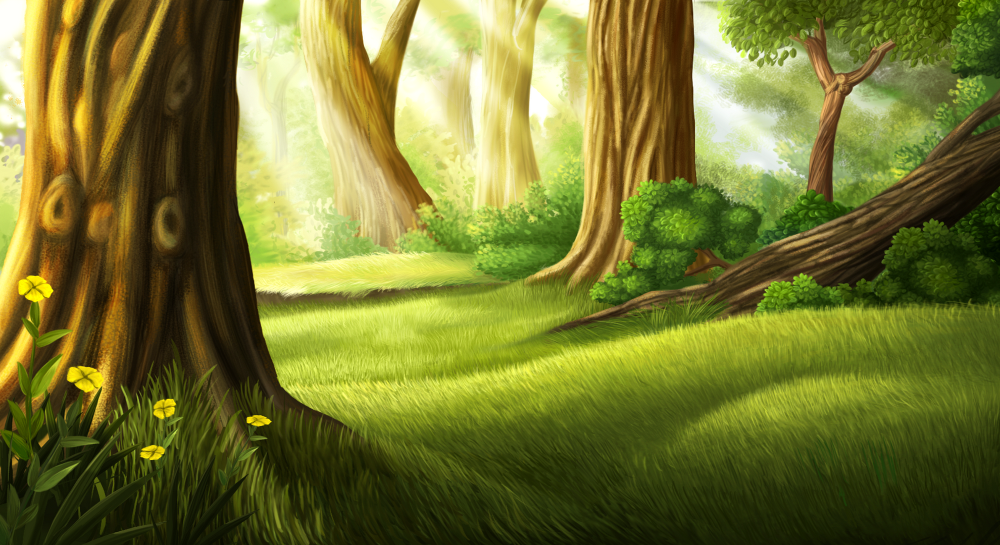

Выключить навигацию
Главная страница
Генератор паролей
Вариации

CanslerW
Вконтакте
Instagram
Вариация номер #1
Вариация номер #2
Вариация номер #3
Вариация номер #4
Вариация номер #5
Вариация номер #6
Вариация номер #7
Вариация номер #8
Вариация номер #9
Вариация номер #10